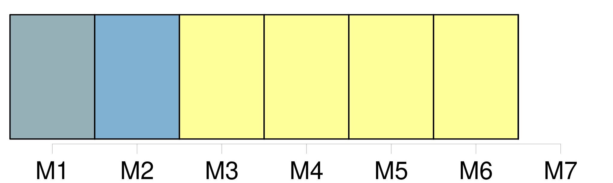
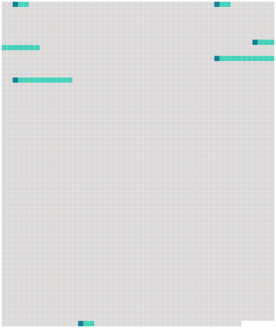

Longueur nb maillons : 6 mentions |
  |
Si de [tels autres moyens] sont utilisés, le transporteur délivre à l'expéditeur, à la demande de ce dernier, un récépissé de marchandises permettant l'identification de l'expédition et l'accès aux indications enregistrées par [ces autres moyens] [13 phrases]
Article 8 [2 phrases] L'expéditeur est responsable de l'exactitude des indications et déclarations concernant la marchandise inscrites par lui ou en son nom dans la lettre de transport aérien, ainsi que de celles fournies et faites par lui ou en son nom au transporteur en vue d'être insérées dans le récépissé de marchandises ou pour insertion dans les données enregistrées par [les autres moyens prévus au paragraphe 2 de l'article 4] [4 phrases]
Sous réserve des dispositions des paragraphes 1 et 2 du présent article, le transporteur assume la responsabilité de tout dommage subi par l'expéditeur ou par toute autre personne à l'égard de laquelle la responsabilité de l'expéditeur est engagée, en raison d'indications et de déclarations irrégulières, inexactes ou incomplètes insérées par lui ou en son nom dans le récépissé de marchandises ou dans les données enregistrées par [les autres moyens prévus au paragraphe 2 de l'article 4] [68 phrases]
Toutefois, lorsque la destruction, la perte, l'avarie ou le retard d'une partie des marchandises, ou d'un objet qui y est contenu, affecte la valeur d'autres colis couverts par la même lettre de transport aérien ou par le même récépissé ou, en l'absence de ces documents, par les mêmes indications consignées par [les autres moyens] visés à l'article 4, paragraphe 2, le poids total de ces colis doit être pris en considération pour déterminer la limite de responsabilité. |
 |
La ressource peut être téléchargée sur la page Ortolang
Si vous avez des questions ou vous voyez des erreurs, merci d'envoyer un mail à silvia.federzoni89@gmail.com
Site développé par S. Federzoni (contact)